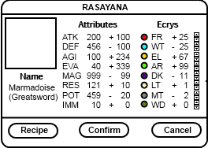

6.1 Elements
In the world of Cadabolg, Alchemists (the primary authority on how the universe works) have determined that all matter is composed of fundamental units called elements. They have isolated eight such elements, which they've called: Light, Air, Water, Wood, Metal, Fire, Electricity, and Dark.
6.2 Elemental Crystals (Ecrys)
6.2.1 Accquiring Ecrys
6.2.2 Trading with Ecrys
6.2.3 Using Ecrys
6.3 Elemental Affinity
6.3.1 Human
6.3.2 Monsters
6.3.3 Golems
6.4 Rasayana

Rasyana is the art of changing the nature of an object by manipulating its component elements. Principal to this art is the use of ecrys. In order to do Rasayna, you must have the key items [DAGDA CAULDRON] and [HERMETIC'S FOLIO].
6.4.1 Synthesis
In order to synthesize an item, one needs a [BASE] class item and the right configuration of ecrys. [BASE] items can transform into any of the items of its type (e.g. Rapier Base can be synthesized to make the "Fleruet" or the "Epee"). Note that the ecrys cost to synthesize an item is doubled unless it has been created before or is in the party's possession. All synthesized items are noted in the [HERMETIC'S FOLIO] from where they can be selected and instantly made.
6.4.2 Fusion
Upgrading an item means improving its attributes. Upgrading is done by fusing it with different types of ecrys. Each type of ecrys improves a different attribute:
- Light: RES
- Air: EVA
- Water: DEF
- Wood: IMM
- Metal: POT
- Fire: STR
- Elec: AGI
- Dark: MAG
Some items respond better (require fewer ecrys) to certain ecrys than others. This gives a hint as to which item it will upgrade to. (e.g. Katana responds best to Water and Metal ecrys because it upgrades to Juuchi Yosamu and Kiku-Ichimonji, respectively). When the upgraded item, recieves the required attributes it can change into another weapon automatically.
6.4.3 Fission
Downgrading an item means reducing its attributes. It is done by extracting ecrys from an item. Just as in upgrading, different attributes correspond to different ecrys. If the attributes are reduced low enough, the weapon will downgrade to another weapon automatically. By extracting all the ecrys, the item turns into its [BASE] form.
6.4.4 Item-Ecrys Multipliers
| Type | STR | DEF | AGI | EVA | MAG | RES | POT | IMM |
|---|---|---|---|---|---|---|---|---|
| Blade (IWA) |